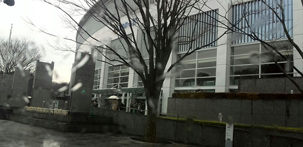
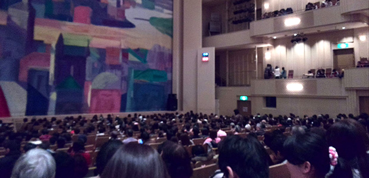
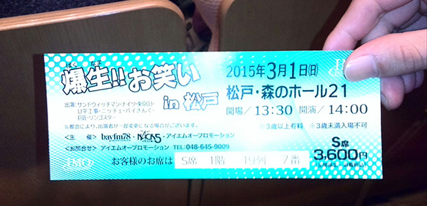
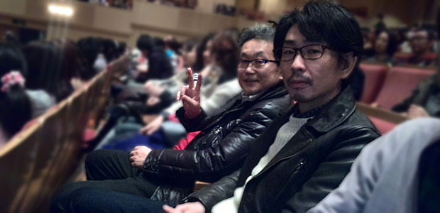
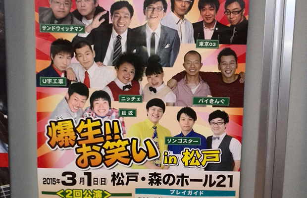

初、お笑いライブ！
３月１日、研究所の職員計８名でお笑いライブを観に行きました。
正直なところ、この話が持ち上がったときには、あまり乗り気ではありませんでした。
まず、私は出不精である。
さらに、私はナマの臨場感よりもＴＶ画面でのわかりやすさを好む。
またさらに、私は好きなときにトイレに行き、好きなものを食べながら鑑賞したい。
というわけで、映画やスポーツ観戦そしてコンサートに至るまで、基本的に行こうと考えないタイプなのです。
４０年も生きてきて、ナマ鑑賞したものは以下のものしかありません（古い順）。
映画「ＥＴ」
コンサート「渡辺美里」
野球観戦「巨人ＶＳ…どこか忘れた」
映画「フォレストガンプ」
ピアノコンサート「ブーニン」
野球観戦「マリーンズＶＳライオンズ」
プライベートではこれだけです。しかも全て人の誘いに乗ったものばかり。
あとは塾の遠足で落語とか相撲観戦、シルクドソレイユなどはありますが。
しかし今回はせっかくチケットをとってもらったし、お笑い自体は好きなので、せっかくだから参加させてもらいました。
ということで、松戸の‘森のホール２１’へ。

（あいにくの雨…）
庄本氏は自分の車で現地へ。
女性陣はみんな管野所長の車で。
なぜか私だけＨＰ支配人の車で…むさくるしい（笑）。
さて、雨ニモマケズ、会場入り。
ホールはなかなか広い！

（なんと４階席まで！）

（我々は１階席）

（嬉しそうな所長となぜかドヤ顔の庄本氏）
午後２時を過ぎ、いよいよ開演です。
うん、面白い！
この日のタレントを出演順に言うと、
・ニッチェ
・リンゴスター
・巨匠
・Ｕ字工事
・バイきんぐ
・東京０３
・ナイツ
・サンドウィッチマン

って、かなり豪華なメンツじゃないですか！
と言っても、この中でまともにコントを観たことがあって好きなのはサンドウィッチマンとナイツぐらいで、あとは東京０３角田さんのマジ歌選手権が好きだったりするぐらいだったのですが。
実際始まってみると、トップバッターのニッチェから、なかなかオモシロイぞ。
ピンマイクも高性能らしく、非常に聞きやすい。
ナイツなんかは開催地元ネタ（松戸がらみ）なんかも取り入れてくれたりして、地方ライブならではのサービスも忘れていない。
感心するのは、どのコンビもそうだけど会場を温める手法に長けていること。
また、客の反応によって、ある程度はアドリブも取り入れていますね。
これは授業や講演会でも応用できるかもしれない。
参考になりますな。
ふと「彼らはどれぐらいこのステージのために練習してきたのだろう」と考えました。
だって、全っ然セリフを噛まないし、突っ込みのタイミングとかドンピシャだし。
本人たちも楽しみながらやって、あの完成度。
いやあ、やっぱりエンターテイナーは努力してるんだなぁって思いました。
ニッチェの歌が聴けたし、コトゥーゲの「なんて日だ！」も聞けたし、富澤氏の「何言ってるかよくわからない」も聞けたし、それぞれのネタがみんな面白かった！
大満足の２時間でした。
さて、週明けからまた仕事だ！（笑）